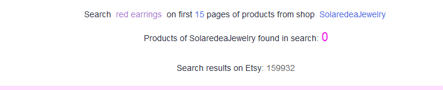

Как узнать, показывает ли Etsy мой магазин покупателям
Это проще всего проверить, если ввести в поиске Etsy название магазина и
нажать «find shop names containing».
Кроме этого, можно ввести в поиск заголовок недавно добавленных листингов.
Можно даже не в глобальный поиск по всему Etsy, а в строке поиска по мага-
зину. Если товар не найден (а с момента добавления прошло уже несколько
дней) – значит, скорее всего, ваш магазин попал под «санкции» Etsy.
Необходимо связаться с админами Etsy и уточнить причину, почему ваши то-
вары или весь магазин не показываются в поиске.
Как узнать позиции своего листинга
Позиции ваших листингов по нужным запросам можно узнать с помощью сто-
ронних сайтов и сервисов. Но с ними есть проблема – позиции в них могут
отличаться от реальных (иногда очень сильно). Поэтому полученные результаты
будут приблизительны.
К тому же, на Etsy работает персонализированный поиск. Он подстраивается
под конкретного посетителя, и поэтому позиции товаров могут отличать от че-
ловека к человеку.
Есть несколько сервисов, которые помогают отслеживать позиции листингов. Я
чаще всего использую сайты EtsyGadget http://etsygadget.com/en/search/ и
eRank https://erank.com/


Например, в EtsyGadget нужно ввести следующие данные:
• название магазина (Shop Name)
• поисковый запрос (Search word)
• выбрать стандартную на Этси сортировку по релевантности (Sort by Rele-
vancy)
• выбрать количество страниц результатов поиска, которые проанализи-
рует система – от 5 до 20 (Limit of pages).
• и страну доставки (United States)
После этого нажимаем кнопку Submit и терпеливо ждём. Чем больше страниц
выбрано для анализа, тем дольше ждать.
Если EtsyGadget не найдёт ни одного вашего листинга, то он покажет подобный
текст.
А в случае успеха вы увидите список ваших товаров и информацию о том, на
какой странице и позиции они находятся.
Чтобы перепроверить позиции найденного листинга, можно нажать на указан-
ный справа номер страницы (в данном случае Page# 1) и вы будете перенаправ-
лены на сайт Этси.
Обратите внимание: если на указанной EtsyGadget странице нет вашего ли-
стинга, тогда стоит проверить соседние.
Как узнать фразы, которые люди вводят в поиске
В настоящий момент у Etsy нет собственного сервиса статистики ключевых
фраз, поэтому подбирать фразы для заголовков приходится множеством спо-
собов. Опишем те, которыми пользуемся сами.
Вариант 1 – поисковые подсказки Etsy
Когда вы начинаете что-то писать в строку поиска Etsy, система предлагаем вам
подсказки. Это фразы, которые чаще всего ищут покупатели Этси в последнее
время. Чем выше фраза – тем более популярен запрос.
И в зависимости от того, что вы вводите, меняются и сами подсказки.
Вариант 2 – поисковые подсказки Google
Также подсказки можно искать через строку поиска Google. Но предлагается
слишком мало вариантов за раз. Поэтому лучше использовать сторонние сер-
висы, которые уже заранее собрали такие подсказки у Google. Например, сайт
https://keywordtool.io/ из варианта 3.
Вариант 3 – сайт keywordtool.io
Суть этого сайта в том, что он перебирает все возможные подсказки в поиско-
вой строке Google и выдаётся вам сразу все результаты. Причём ещё подстав-
ляет перед и после вашей фразы все буквы алфавита и смотрит, что Гугл пред-
ложит на это.


Вариант 4 - Google Adwords Keyword Planner (Планировщик ключевых слов)
Этот полезнейший инструмент находится здесь:
https://ads.google.com/intl/ru_ru/home/tools/keyword-planner/
Причём вы можете не только найти идеи для новых фраз, но и узнать их стати-
стику – как часто люди вбивают эти слова в поиск Google.
Вы можете выписать все найденные ключевые фразы, а потом проверить, какие
из них наиболее популярны (и менее конкурентны).

Вариант 5 – анализ листингов конкурентов
Это тоже хороший способ, если вы хотите найти новые запросы для своих то-
варов. Особенно полезно это упражнение для тех, кто плохо знаком с англий-
ским языком и специфичными терминами, которые описывают ваш товар.
Например, русскоязычный человек знает, что шапка по-английски – это «hat».
Но, посмотрев листинги конкурентов, можно наткнуться на такие слова, как
«beanie», «cap» и т.п.
Ищите такие слова и фразы в заголовках листинга, а также в тэгах и описании
товаров.
Вариант 6 – реклама в Etsy Ads
Когда вы запускаете на Этси рекламную кампания (Etsy Ads), то постепенно у
вас накапливается статистика фраз, вводя которые люди видели ваши листинги.
Этот вариант не очень удобен, по сравнению со всеми остальными, потому что:
• на сбор данных может уйти довольно много дней и даже недель
• Etsy показывает только те запросы, по которым было больше 5 показов
ваших листингов
• поисковые фразы основываются на заголовках, которые у вас есть сейчас
– поэтому вы вряд ли получите очень много новых идей
Вариант 7 – статистика ключевых слов магазина
Если ваш магазин работает уже какое-то время и у вас есть просмотры листин-
гов, то вы можете посмотреть статистику ключевых слов, по которым к вам за-
ходили.
Они также основаны на тех ключевых фразах, которые уже у вас прописаны в
заголовках и тэгах. Но иногда попадаются и полезные идеи.
Вариант 8 – инструмент Search Analytics
В разделе Marketing – Search Analytics вы можете посмотреть все фразы, по ко-
торым покупатели на Etsy видели ваши товары в поиске.
Здесь можно найти довольно много фраз, о которых вы раньше не задумыва-
лись.
Как в итоге выбрать подходящие поисковые фразы
Я основываюсь на двух параметрах:
• число запросов фразы в месяц (по данным Google или других сайтов)
• число товаров в поиске Этси по этой фразе
Соответственно, первый параметр – это спрос. А второй – предложение. Наша
задача – найти их идеальное соотношение. То есть найти поисковые запросы,
где мало конкурентов, но при этом их ищут достаточно часто.
Чем меньше конкурентов, тем проще пробиться на первые страницы результа-
тов поиска.
Например, если у вас 50 000 конкурирующих листингов, то ваш товар может
затеряться где-то на 7-8 странице или дальше. Не очень многие покупатели
дойдут до этой страницы. И ещё меньше заметят ваш товар среди остальных.
Чаще всего, если по запросу Etsy находит меньше 10 000 товаров, то довольно
просто оказаться на 1-3 страницах поиска. А если меньше 5 000 – то и в самом
верху первой страницы. Хотя, повторюсь, что каждый запрос и каждая ситуация
уникальны. Это лишь общий вывод из моей практики.
И второй важный параметр –как часто данную фразу вводят в поиске покупа-
тели. Этси не показывают нам свою статистику – и мы точно не знаем, как часто
ищут ту или иную фразу на этой площадке. Единственное, что мы можем – это
брать статистику из Google. При этом понимая, что если там написано 1000, то
это вовсе не значит, что и на Etsy фразу ищут 1000 раз в месяц. Скорее всего,
многократно меньше.
Ещё один приблизительный способ понять, как часто ищут фразу на Etsy – ис-
пользовать сервисы eRank или Marmalead.
Старайтесь соблюдать баланс и выбирать фразы не сильно конкурентные и при
этом довольно популярные. Это особенно актуально для новых магазинов и ли-
стингов, у которых «в глазах» Этси ещё нет положительного рейтинга в виде
продаж, просмотров и лайков.
Отличаются ли результаты поиска для разных людей
По себе я не раз замечала, что порой (но не всегда) результаты одного и того
же поиска для меня и для других людей отличаются. То есть меняется порядок
листингов в поисковых результатах.
Кроме того, сами Этси говорили, что они стараются учитывать историю про-
смотров покупателей и в следующий раз предлагать им те товары, которые с
большей вероятностью их заинтересуют.
Поэтому, чтобы посмотреть позиции своего листинга для «нового» покупателя,
перейдите в режим инкогнито любого браузера (например, Chrome или Opera)
и попробуйте сделать поиск там. Так вы получите объективные результаты по
позициям. Насколько это возможно при постоянно меняющемся поисковом ал-
горитме Этси.
Стоит ли делать отдельные листинги для неанглоязычных по-
купателей
Etsy позволяет дублировать информацию о ваших товарах на другие языки. Для
этого необходимо перейти в меню Shop Manager - Settings – Languages and trans-
lations – Start translation your shop и подключить нужный вам язык.


После этого в описании листингов появится 3 новых поля: заголовок, описание
и тэги на новом языке, которые увидят покупатели из данного региона.
Подробнее о добавлении дополнительного языка магазина читайте в разделе
4, вопрос «Как сменить язык магазина?».
С другой стороны, если покупатель, например, из Франции ищет что-то на
французском, то Etsy переводит англоязычные заголовки и тоже показывает их
в поиске. Это подтверждает тот факт, что порой в статистике ключевых слов, по
которым заходили в магазин, можно найти фразы на языках, отличных от ан-
глийского.
Поэтому если у вас есть время и желание, то можете подключить дополнитель-
ные языки и дублировать заголовки, описание и теги на них.


Как пользоваться Google Ads Keyword Planner (Планировщик
ключевых слов)
C помощью этого инструмента можно получить идеи для новых ключевых слов,
а также статистику запросов (сколько раз в месяц эту фразу ищут в поиске
Google).
https://ads.google.com/intl/ru_ru/home/tools/keyword-planner/
До лета 2016 года Google показывал точную статистику по всем запросам, что
вы ввели. Например, были видно, что фразу «red dangle earrings» искали при-
мерно 500 раз. А сейчас точную статистику могут получить только те, кто посто-
янно вкладывает деньги в рекламные кампании Google – причём немалые. А
все остальные видят диапазон значений, например, от 100 до 1 000.
Если перейти с вкладки Прежние показатели на вкладку Прогнозы, то можно
узнать, сколько примерно раз ту или иную фразу будут искать в следующем ме-
сяце (Google прогнозирует эту цифру на основе данных за прошлые месяцы и
годы).